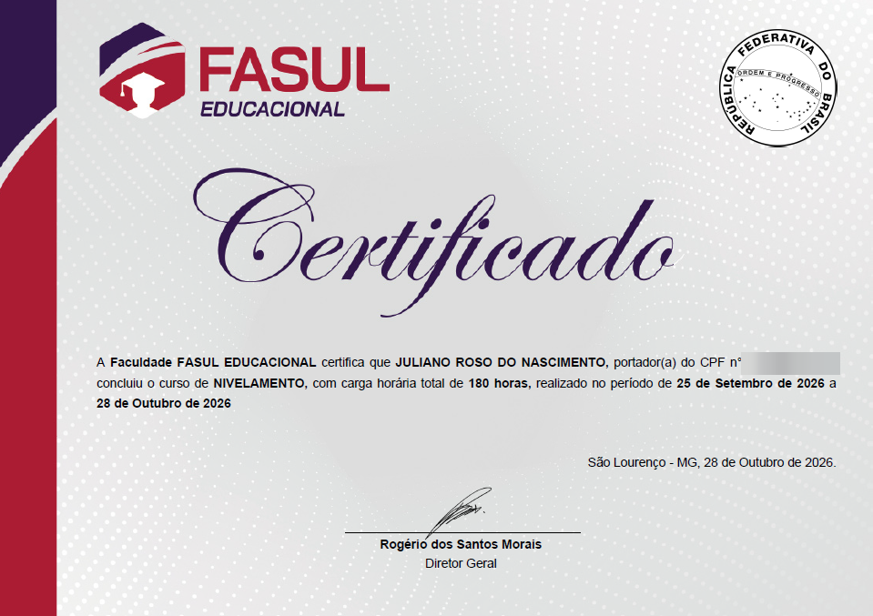
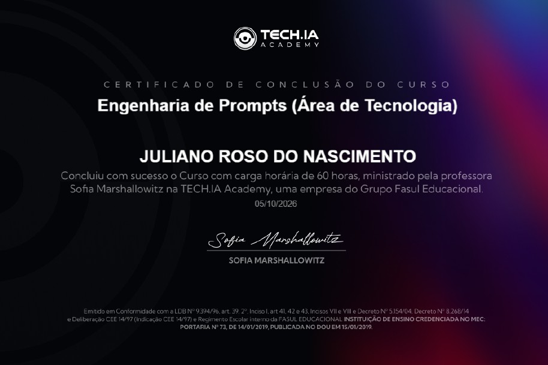
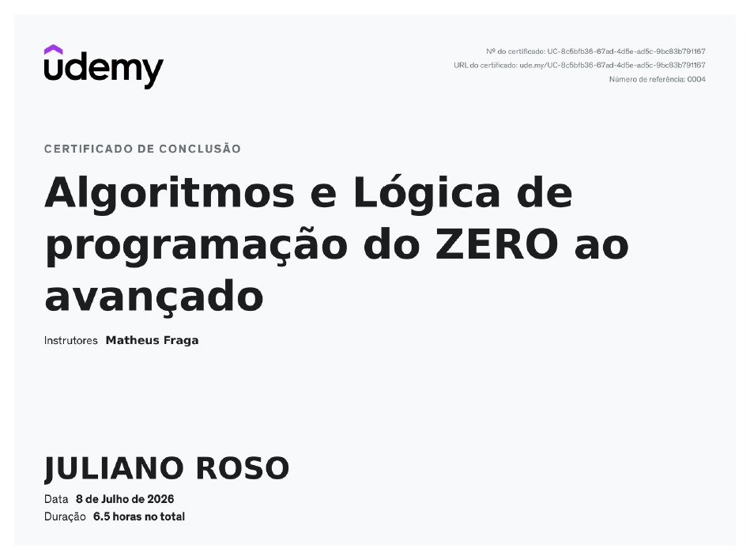
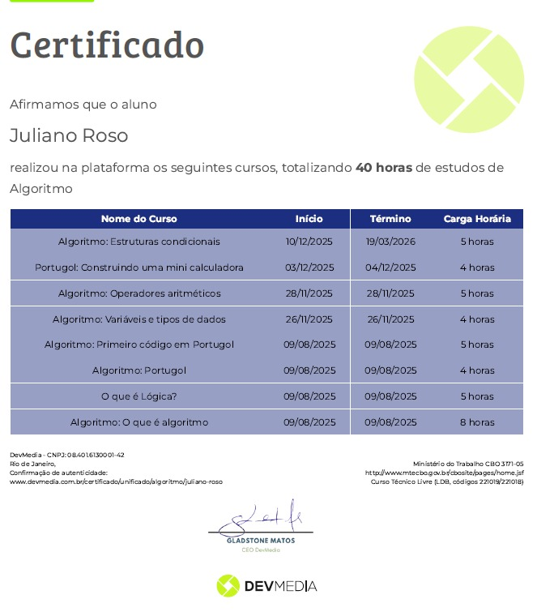
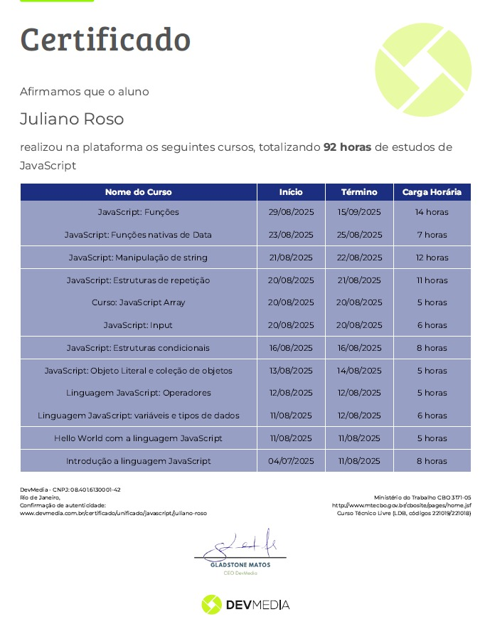

Consulta de clima com Open-Meteo
Busca cidades, consulta coordenadas pela API de Geocoding e exibe temperatura e velocidade do vento; prática com Fetch, async/await e atualização do DOM.
Estudante de ADS | Estágio em Desenvolvimento Front-end
Estudante de Análise e Desenvolvimento de Sistemas, com projetos próprios em interfaces web, formulários e consumo de APIs. Prática com HTML5, CSS3, JavaScript, Bootstrap, Tailwind CSS, Git e GitHub; React em aprendizado. Busco estágio para aprender em equipe e contribuir com organização, atenção e comunicação trazidas da área comercial.
Cursando
FASUL Educacional
Cursando o 1º semestre · Início em set/2026 · Previsão de conclusão: 2028
Grade curricular, com certificação intermediária em cada semestre:
Atividades complementares: 120 h
Leitura simples de documentação técnica.
Busca cidades, consulta coordenadas pela API de Geocoding e exibe temperatura e velocidade do vento; prática com Fetch, async/await e atualização do DOM.
Busca de pokémons consumindo a PokéAPI, feita com HTML, CSS e JavaScript puro.
Protótipo de busca de acomodações com Next.js, React, TypeScript e Tailwind CSS. Projeto de estudo, com anúncios ilustrativos e sem reservas reais.
Cardápio demonstrativo de pizzas com seleção de tamanhos e carrinho de compras. Projeto de estudo, sem envio de pedidos nem pagamentos.
Projeto de estudo com HTML, CSS e JavaScript; validação de formulário, eventos e mensagens de retorno na interface.
Calculadora com as quatro operações e botões de limpar e apagar.
Página com HTML semântico, formulário de contato e layout responsivo.
Passei sete anos na área comercial, atendendo clientes e batendo metas. Foi uma boa escola, mas chegou a hora de crescer e de voltar a um sonho de infância: trabalhar com tecnologia. Decidi mudar de carreira e entrei na faculdade de Análise e Desenvolvimento de Sistemas, onde estou no primeiro período.
Há quase dois anos estudo programação por conta própria. Quero aplicar o que aprendi em projetos reais, ajudar a empresa a enfrentar seus desafios e crescer junto com ela.
Estou disposto a sair da zona de conforto e, se for preciso, mudar de cidade para construir minha carreira em tecnologia.




